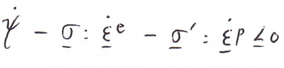
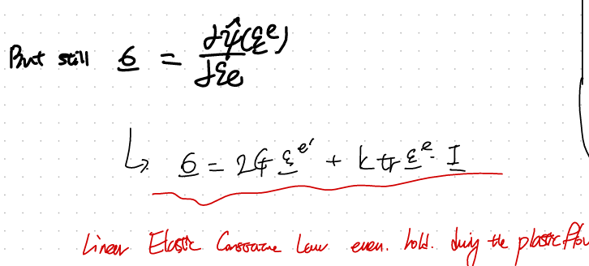
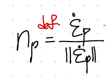
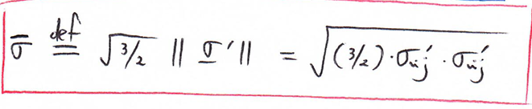
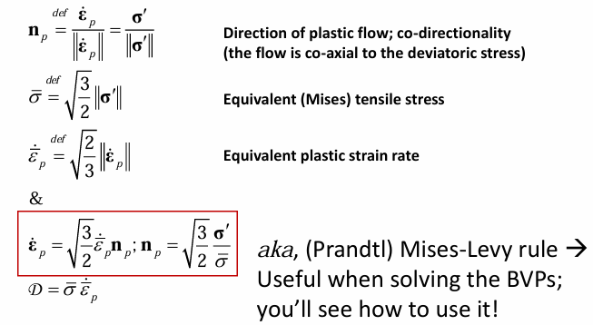

Plasticity 가정들.
[Isotropic Elastic - Plasticity of engineerign Materials]
1. When dislocation move, the crystal deforms plastically
2. Poly crystalline materials are regarded to be isotropic elasitc - plaasstic
3. Assmed to be Incompressible plastic deformation
4. For small deformation, the total strain decomposes into its elastic and plastic part
Elastic과 동일하게
small deformation, Equilibrium motion, Thermodynamic 2nd law를 그대로 적용된다.

여기서 4번 가정을 수식으로 표현하면, small deformation에서 우리는
elastic, plastic strain을 나누고, independent하다고 가정한다.

여기서 재밌는 사실은, decompose한 strain을 그대로 Thermodynamic 2nd law방정식에 대입해주면,

여기서 우리가 elasitc strain과 plasitc strain은 독립적이다라고 했으므로,
rate of Helmoltz free Energy는 Elasit stress-strain power와 동일하다
(탄성영역의 핵심)

그렇다면, Dissipation은 전부 plastic stress-strain power로 부터 유도된는 것!!!!
한발짝 더 나아가 사고해보면, 결국
Stress tensor는 elastic 규칙을 만족한다.
(우리가 Linear elastic에서 했던 방식 그대로)

그리고 똑같은 stress tensor가 plastic deformation에서도 쓰인다는 것이다!!!
(이게 핵심이다).
여기서 만약에 isotropic인 상황이라면, 우리가 계속해서 BVP문제에서 사용하던,
Constitutive EQ도 사용가능하다는 말이다.

자 이제, Plastic strain (핵심임) 을 분석해보자.
먼저 direction of plastic flow (np)를 다음과 같이 정의한다.
단순하게 plastic strain tensor의 방향텐서이다.

여기서 정말 어려운 개념이 나온다. 바로,
np // Deviatoric stress tensor
의 방향
(이해하기 어렵습니다 정말)

압축적으로 강력하게 표현하면,
결국 plastic을 일으키는 원동력이 바로,
deviatoric stress 라는 것!!!
from Mises Theory.
어떻게 아는가?? 추후에 나오겠지만,
결국 Yield strength(항복강도)가 plastic strain에 따라서, 변하게 됩니다.
그리고 그 항복강도를 결정하는 것이 바로 Deviatoric Stress임을
Mises가 실험적으로 증명하였다.
따라서, Deviatoric stress - > Y (yield Strength)결정
-> it is driving force of the plastic flow.
drirving force = F 라고하면,
그 방향은 결국 acceleration(a) 이고 여기서
F -> Deviatoric Stress tensor
a -> rate of plastic strain
따라서!!!!! 'Coaxiality'!!!!
np // rate of plasitc strain // Deviatoric Stress

따라서, 우리는 Deviatoric Stress, rate of plastic strain, np를 자유롭게 치환할 수 있다.(flow rule)

자 여기서, 이제 Deviatoric stress tensor를 스칼라로 표현한 Von-Miese Stress 의 정의가 나온다.



최종식으로 한번 유도해보았습니다.
결국 Deviatoric stress tensor의 크기를 스칼라로 나타낸 값이다!!!
AKA Von mises stress or 'The Mises Equivalent Tensile Stress'
두번째, rate of plastic strain도 결국 텐서이므로, 크기로 나타내는 스칼라를 다음과 같이 정의하자.
Equivalent tensile plasitc strain rate

위 정의를 가지고, 다음과 같이 D를 스칼라의 곱으로 전환할 수가 있다!!

[Overall Flow Rules]
